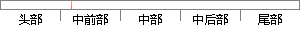

在发现音乐模块主要包含的是提供搜索关键字进行对各种信息的搜索功能。
片段位置图

相似结果|
相似片段 1：等；搜索模块，主要提供用户搜索课程功能，让用户能够快速搜索所需要的课程，实现基于关键字多维度匹配搜索方法；分享模块，能够将教育信息分享到社交网络，实现基于社交网络服务模式的共享策略；推荐模块，主要根据用户
相似片段 2：提供的关键字的网页，而不论该网页包含的是文本，还是音乐或图片。而指定格式搜索指向的目标则不再是网页，而是储存在遍布Internet的服务器上的各种计算机文件，主要包括图片文件(JGP格式、GIF格式)、文档文件(DOC格式、PDF格式)、音乐文件(MP3格式、WMA格式)等等。
|
※ 片段修改建议 ※
近似词参考：- 发现：发明
- 主要：首要 重要
- 包含：包括 包罗 包孕 蕴含
- 提供：供给 供应
- 搜索：搜刮 搜寻
- 进行：举行
- 各种：各类 种种
- 搜索：搜刮 搜寻
- 功能：功效
系统自动生成语句：在发明音乐模块首要包括的是供给搜刮关键字举行对各类信息的搜刮功效。
注：本片段修改建议为系统自动生成，仅供参考。